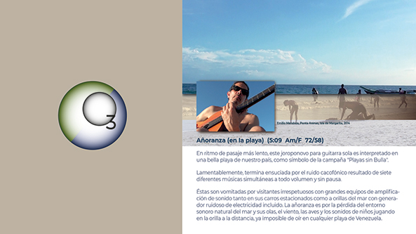

MEDIA:
MÚSICA
| VIDEOS
| GALERIA
| CONCIERTOS
|
INFO: FUNCIÓN | INTEGRANTES | TARIFAS | DISTRIBUCIÓN |RIDER |
INICIO
INFO: FUNCIÓN | INTEGRANTES | TARIFAS | DISTRIBUCIÓN |RIDER |
{kind=link}
INICIO

AÑORANZA (en la Playa)
(Emilio Mendoza)
Am/F 72 div. binaria / 58 div. ternaria
En ritmo de pasaje más
lento, este joroponovo para guitarra sola es interpretado en
una bella playa de nuestro país, como símbolo de la campaña
"Playas sin Bulla". Lamentablemente, termina ensuciada por el
ruido cacofónico resultado de siete diferentes músicas
simultáneas, a todo volumen y sin pausa. Éstas son vomitadas
por visitantes irrespetuosos con grandes equipos de
amplificación de sonido tanto en sus carros estacionados como
a orillas del mar con generador ruidoso de electricidad
incluido. La añoranza es por la pérdida del entorno sonoro
natural del mar y sus olas, el viento, las aves y los sonidos
de niños jugando en la orilla a la distancia, ya imposible de
oír en cualquier playa de Venezuela.
Música
• Guitarra 6, con sonidos de playa y cacofonía final, en Guarapiche Blues (2019)
Comentarios
Videos
• Guitarra 6, con sonidos de playa y cacofonía final, en Guarapiche Blues (2019)
Comentarios
Esta pieza forma parte del activismo ecológico por salvar el Sonido de la Tierra. Otras piezas relacionadas son Silencio I, Silencio II y Silencio III del mismo disco Guarapiche Blues, así como de otras actividades en pro de reducir el ruido humano, como la solicitud de enmienda constitucional (ver al final de la página de inicio y los considerandos), y el artículo en construcción En torno al Silencio. Para información sobre qué es música ecológica, ver FUNCIÓN, así como mi desarrollo musical en este campo.
La pieza utiliza el estilo de arpegios de guitarra clásica dentro de un ritmo de joropo lento o pasaje, (2/2. & 6/4+4/4.), con coexistencia ternaria y binaria, y cambios formales hacia un 4/4 más lento en la intro (Tema A) como en el medio (Tema A2). Emplea varias situaciones de contrastes extremos de progresiones armónicas: unas muy comunes y pegostosas, como en el Tema A y Descarga: ii - V7 en mayor (Am7 - D7), luego la progresión del ii - V - i en menor (Tema B: Bm75b - E79b - Am7), con el rabito anterior de ii - V7, que se une a otra aún más pegostosa, la famosa progresión de cuartas (Tema C: Dm7 - G7 - C - F - [ - ]- Bm75b - E7 - Am7), pero con subiditas cromáticas en cada acorde y un preaviso del E7sus4 - Fdim7 que se va a utilizar luego para el clímax en puras disminuidas, usando siempre acordes en la guitarra con cuerdas al aire para ornamentarlos armónicamente aún más, como por ejemplo Am7 --> Am679. Luego se contrasta con una progresión cromática de sucesiones descendentes de acordes mitad disminuidos con full disminuidos con séptima (Tema D: Gm75b - Edim7 - F#m75b - B75+) en relación de terceras, así como sustituciones con acordes de dominante con 7 y 5aug. En la parte central en 4/4 Tema A2, se explora la sonoridad de cuerdas al aire para dar una expresividad sensual y sonora del bello sonido de la guitarra, un color armónico. El pegoste en progresión de cuartas se realiza de nuevo en el Tema C2 con sonoridad aguda de armónicos llegando a un acorde exquisito, Dm796, con aparición anterior. La progresión del Tema A se une al final con la descendencia cromática en Tema B3 con Coda. Se incluye un video de la primera toma completa que se grabró de la pieza en casa de Zulay e Ike en Florida, EEUU, en su recién comprado apartamento, en la última noche de una agradable visita después de años sin verlos ni tocar juntos. El autor ha tocado con Ike en varios grupos como Tinta China y en un grupo musical "Tiempo" para fiestas en 1973, del peluquero Jacomino de Los Teques. La forma de la pieza fue cambiada mucho desde esa toma, hasta llegar a su versión actual, pero la emoción de esa primera toma es insuperable, sobretodo en la descarguita improvisada y por el acompañamiento en el Cuatro de Zulay on un ritmo sólido.Videos
Reencuentro
- Inseparable amistad musical
Primera versión de la pieza en grabación casera con Zulay e Ike Lizardo al visitarlos en su casa en FL, EEUU, 2016,
anterior integrante de Ozono Jazz.
Primera versión de la pieza en grabación casera con Zulay e Ike Lizardo al visitarlos en su casa en FL, EEUU, 2016,
anterior integrante de Ozono Jazz.